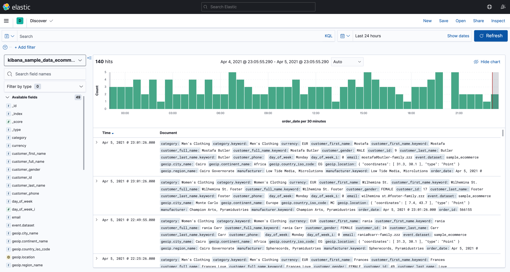

- 01 认知：ElasticSearch基础概念.md.html
- 02 认知：Elastic Stack生态和场景方案.md.html
- 03 安装：ElasticSearch和Kibana安装.md.html
- 04 入门：查询和聚合的基础使用.md.html
- 05 索引：索引管理详解.md.html
- 06 索引：索引模板(Index Template)详解.md.html
- 07 查询：DSL查询之复合查询详解.md.html
- 08 查询：DSL查询之全文搜索详解.md.html
- 09 查询：DSL查询之Term详解.md.html
- 10 聚合：聚合查询之Bucket聚合详解.md.html
- 11 聚合：聚合查询之Metric聚合详解.md.html
- 12 聚合：聚合查询之Pipline聚合详解.md.html
- 13 原理：从图解构筑对ES原理的初步认知.md.html
- 14 原理：ES原理知识点补充和整体结构.md.html
- 15 原理：ES原理之索引文档流程详解.md.html
- 16 原理：ES原理之读取文档流程详解.md.html
- 17 优化：ElasticSearch性能优化详解.md.html
- 18 大厂实践：腾讯万亿级 Elasticsearch 技术实践.md.html
- 19 资料：Awesome Elasticsearch.md.html
- 20 WrapperQuery.md.html
- 21 备份和迁移.md.html
- 捐赠
因收到Google相关通知，网站将会择期关闭。相关通知内容
03 安装：ElasticSearch和Kibana安装
安装ElasticSearch
ElasticSearch 是基于Java平台的，所以先要安装Java
- 平台确认
这里我准备了一台Centos7虚拟机, 为方便选择后续安装的版本，所以需要看下系统版本信息。
[root@VM-0-14-centos ~]# uname -a
Linux VM-0-14-centos 3.10.0-862.el7.x86_64 #1 SMP Fri Apr 20 16:44:24 UTC 2018 x86_64 x86_64 x86_64 GNU/Linux
- 安装Java
安装 Elasticsearch 之前，你需要先安装一个较新的版本的 Java，最好的选择是，你可以从 www.java.com 获得官方提供的最新版本的 Java。安装以后，确认是否安装成功：
[root@VM-0-14-centos ~]# java --version
openjdk 14.0.2 2020-07-14
OpenJDK Runtime Environment 20.3 (slowdebug build 14.0.2+12)
OpenJDK 64-Bit Server VM 20.3 (slowdebug build 14.0.2+12, mixed mode, sharing)
- 下载ElasticSearch
从这里 下载ElasticSearch
比如可以通过curl下载
[root@VM-0-14-centos opt]# curl -O https://artifacts.elastic.co/downloads/elasticsearch/elasticsearch-7.12.0-linux-x86_64.tar.gz
% Total % Received % Xferd Average Speed Time Time Time Current
Dload Upload Total Spent Left Speed
- 解压
[root@VM-0-14-centos opt]# tar zxvf /opt/elasticsearch-7.12.0-linux-x86_64.tar.gz
...
[root@VM-0-14-centos opt]# ll | grep elasticsearch
drwxr-xr-x 9 root root 4096 Mar 18 14:21 elasticsearch-7.12.0
-rw-r--r-- 1 root root 327497331 Apr 5 21:05 elasticsearch-7.12.0-linux-x86_64.tar.gz
- 增加elasticSearch用户
必须创建一个非root用户来运行ElasticSearch(ElasticSearch5及以上版本，基于安全考虑，强制规定不能以root身份运行。)
如果你使用root用户来启动ElasticSearch，则会有如下错误信息：
[root@VM-0-14-centos opt]# cd elasticsearch-7.12.0/
[root@VM-0-14-centos elasticsearch-7.12.0]# ./bin/elasticsearch
[2021-04-05T21:36:46,510][ERROR][o.e.b.ElasticsearchUncaughtExceptionHandler] [VM-0-14-centos] uncaught exception in thread [main]
org.elasticsearch.bootstrap.StartupException: java.lang.RuntimeException: can not run elasticsearch as root
at org.elasticsearch.bootstrap.Elasticsearch.init(Elasticsearch.java:163) ~[elasticsearch-7.12.0.jar:7.12.0]
at org.elasticsearch.bootstrap.Elasticsearch.execute(Elasticsearch.java:150) ~[elasticsearch-7.12.0.jar:7.12.0]
at org.elasticsearch.cli.EnvironmentAwareCommand.execute(EnvironmentAwareCommand.java:75) ~[elasticsearch-7.12.0.jar:7.12.0]
at org.elasticsearch.cli.Command.mainWithoutErrorHandling(Command.java:116) ~[elasticsearch-cli-7.12.0.jar:7.12.0]
at org.elasticsearch.cli.Command.main(Command.java:79) ~[elasticsearch-cli-7.12.0.jar:7.12.0]
at org.elasticsearch.bootstrap.Elasticsearch.main(Elasticsearch.java:115) ~[elasticsearch-7.12.0.jar:7.12.0]
at org.elasticsearch.bootstrap.Elasticsearch.main(Elasticsearch.java:81) ~[elasticsearch-7.12.0.jar:7.12.0]
Caused by: java.lang.RuntimeException: can not run elasticsearch as root
at org.elasticsearch.bootstrap.Bootstrap.initializeNatives(Bootstrap.java:101) ~[elasticsearch-7.12.0.jar:7.12.0]
at org.elasticsearch.bootstrap.Bootstrap.setup(Bootstrap.java:168) ~[elasticsearch-7.12.0.jar:7.12.0]
at org.elasticsearch.bootstrap.Bootstrap.init(Bootstrap.java:397) ~[elasticsearch-7.12.0.jar:7.12.0]
at org.elasticsearch.bootstrap.Elasticsearch.init(Elasticsearch.java:159) ~[elasticsearch-7.12.0.jar:7.12.0]
... 6 more
uncaught exception in thread [main]
java.lang.RuntimeException: can not run elasticsearch as root
at org.elasticsearch.bootstrap.Bootstrap.initializeNatives(Bootstrap.java:101)
at org.elasticsearch.bootstrap.Bootstrap.setup(Bootstrap.java:168)
at org.elasticsearch.bootstrap.Bootstrap.init(Bootstrap.java:397)
at org.elasticsearch.bootstrap.Elasticsearch.init(Elasticsearch.java:159)
at org.elasticsearch.bootstrap.Elasticsearch.execute(Elasticsearch.java:150)
at org.elasticsearch.cli.EnvironmentAwareCommand.execute(EnvironmentAwareCommand.java:75)
at org.elasticsearch.cli.Command.mainWithoutErrorHandling(Command.java:116)
at org.elasticsearch.cli.Command.main(Command.java:79)
at org.elasticsearch.bootstrap.Elasticsearch.main(Elasticsearch.java:115)
at org.elasticsearch.bootstrap.Elasticsearch.main(Elasticsearch.java:81)
For complete error details, refer to the log at /opt/elasticsearch-7.12.0/logs/elasticsearch.log
2021-04-05 13:36:46,979269 UTC [8846] INFO Main.cc@106 Parent process died - ML controller exiting
所以我们增加一个独立的elasticsearch用户来运行
# 增加elasticsearch用户
[root@VM-0-14-centos elasticsearch-7.12.0]# useradd elasticsearch
[root@VM-0-14-centos elasticsearch-7.12.0]# passwd elasticsearch
Changing password for user elasticsearch.
New password:
BAD PASSWORD: The password contains the user name in some form
Retype new password:
passwd: all authentication tokens updated successfully.
# 修改目录权限至新增的elasticsearch用户
[root@VM-0-14-centos elasticsearch-7.12.0]# chown -R elasticsearch /opt/elasticsearch-7.12.0
# 增加data和log存放区，并赋予elasticsearch用户权限
[root@VM-0-14-centos elasticsearch-7.12.0]# mkdir -p /data/es
[root@VM-0-14-centos elasticsearch-7.12.0]# chown -R elasticsearch /data/es
[root@VM-0-14-centos elasticsearch-7.12.0]# mkdir -p /var/log/es
[root@VM-0-14-centos elasticsearch-7.12.0]# chown -R elasticsearch /var/log/es
然后修改上述的data和log路径，vi /opt/elasticsearch-7.12.0/config/elasticsearch.yml
# ----------------------------------- Paths ------------------------------------
#
# Path to directory where to store the data (separate multiple locations by comma):
#
path.data: /data/es
#
# Path to log files:
#
path.logs: /var/log/es
- 修改Linux系统的限制配置
- 修改系统中允许应用最多创建多少文件等的限制权限。Linux默认来说，一般限制应用最多创建的文件是65535个。但是ES至少需要65536的文件创建权限。
- 修改系统中允许用户启动的进程开启多少个线程。默认的Linux限制root用户开启的进程可以开启任意数量的线程，其他用户开启的进程可以开启1024个线程。必须修改限制数为4096+。因为ES至少需要4096的线程池预备。ES在5.x版本之后，强制要求在linux中不能使用root用户启动ES进程。所以必须使用其他用户启动ES进程才可以。
- Linux低版本内核为线程分配的内存是128K。4.x版本的内核分配的内存更大。如果虚拟机的内存是1G，最多只能开启3000+个线程数。至少为虚拟机分配1.5G以上的内存。
修改如下配置
[root@VM-0-14-centos elasticsearch-7.12.0]# vi /etc/security/limits.conf
elasticsearch soft nofile 65536
elasticsearch hard nofile 65536
elasticsearch soft nproc 4096
elasticsearch hard nproc 4096
- 启动ElasticSearch
[root@VM-0-14-centos elasticsearch-7.12.0]# su elasticsearch
[elasticsearch@VM-0-14-centos elasticsearch-7.12.0]$ ./bin/elasticsearch -d
[2021-04-05T22:03:38,332][INFO ][o.e.n.Node ] [VM-0-14-centos] version[7.12.0], pid[13197], build[default/tar/78722783c38caa25a70982b5b042074cde5d3b3a/2021-03-18T06:17:15.410153305Z], OS[Linux/3.10.0-862.el7.x86_64/amd64], JVM[AdoptOpenJDK/OpenJDK 64-Bit Server VM/15.0.1/15.0.1+9]
[2021-04-05T22:03:38,348][INFO ][o.e.n.Node ] [VM-0-14-centos] JVM home [/opt/elasticsearch-7.12.0/jdk], using bundled JDK [true]
[2021-04-05T22:03:38,348][INFO ][o.e.n.Node ] [VM-0-14-centos] JVM arguments [-Xshare:auto, -Des.networkaddress.cache.ttl=60, -Des.networkaddress.cache.negative.ttl=10, -XX:+AlwaysPreTouch, -Xss1m, -Djava.awt.headless=true, -Dfile.encoding=UTF-8, -Djna.nosys=true, -XX:-OmitStackTraceInFastThrow, -XX:+ShowCodeDetailsInExceptionMessages, -Dio.netty.noUnsafe=true, -Dio.netty.noKeySetOptimization=true, -Dio.netty.recycler.maxCapacityPerThread=0, -Dio.netty.allocator.numDirectArenas=0, -Dlog4j.shutdownHookEnabled=false, -Dlog4j2.disable.jmx=true, -Djava.locale.providers=SPI,COMPAT, --add-opens=java.base/java.io=ALL-UNNAMED, -XX:+UseG1GC, -Djava.io.tmpdir=/tmp/elasticsearch-17264135248464897093, -XX:+HeapDumpOnOutOfMemoryError, -XX:HeapDumpPath=data, -XX:ErrorFile=logs/hs_err_pid%p.log, -Xlog:gc*,gc+age=trace,safepoint:file=logs/gc.log:utctime,pid,tags:filecount=32,filesize=64m, -Xms1894m, -Xmx1894m, -XX:MaxDirectMemorySize=993001472, -XX:G1HeapRegionSize=4m, -XX:InitiatingHeapOccupancyPercent=30, -XX:G1ReservePercent=15, -Des.path.home=/opt/elasticsearch-7.12.0, -Des.path.conf=/opt/elasticsearch-7.12.0/config, -Des.distribution.flavor=default, -Des.distribution.type=tar, -Des.bundled_jdk=true]
- 查看安装是否成功
[root@VM-0-14-centos ~]# netstat -ntlp | grep 9200
tcp6 0 0 127.0.0.1:9200 :::* LISTEN 13549/java
tcp6 0 0 ::1:9200 :::* LISTEN 13549/java
[root@VM-0-14-centos ~]# curl 127.0.0.1:9200
{
"name" : "VM-0-14-centos",
"cluster_name" : "elasticsearch",
"cluster_uuid" : "ihttW8b2TfWSkwf_YgPH2Q",
"version" : {
"number" : "7.12.0",
"build_flavor" : "default",
"build_type" : "tar",
"build_hash" : "78722783c38caa25a70982b5b042074cde5d3b3a",
"build_date" : "2021-03-18T06:17:15.410153305Z",
"build_snapshot" : false,
"lucene_version" : "8.8.0",
"minimum_wire_compatibility_version" : "6.8.0",
"minimum_index_compatibility_version" : "6.0.0-beta1"
},
"tagline" : "You Know, for Search"
}
安装Kibana
Kibana是界面化的查询数据的工具，下载时尽量下载与ElasicSearch一致的版本。
- 下载Kibana
从这里 下载Kibana
- 解压
[root@VM-0-14-centos opt]# tar -vxzf kibana-7.12.0-linux-x86_64.tar.gz
- 使用elasticsearch用户权限
[root@VM-0-14-centos opt]# chown -R elasticsearch /opt/kibana-7.12.0-linux-x86_64
#配置Kibana的远程访问
[root@VM-0-14-centos opt]# vi /opt/kibana-7.12.0-linux-x86_64/config/kibana.yml
server.host: 0.0.0.0
- 启动
需要切换至elasticsearch用户
[root@VM-0-14-centos opt]# su elasticsearch
[elasticsearch@VM-0-14-centos opt]$ cd /opt/kibana-7.12.0-linux-x86_64/
[elasticsearch@VM-0-14-centos kibana-7.12.0-linux-x86_64]$ ./bin/kibana
log [22:30:22.185] [info][plugins-service] Plugin "osquery" is disabled.
log [22:30:22.283] [warning][config][deprecation] Config key [monitoring.cluster_alerts.email_notifications.email_address] will be required for email notifications to work in 8.0."
log [22:30:22.482] [info][plugins-system] Setting up [100] plugins: [taskManager,licensing,globalSearch,globalSearchProviders,banners,code,usageCollection,xpackLegacy,telemetryCollectionManager,telemetry,telemetryCollectionXpack,kibanaUsageCollection,securityOss,share,newsfeed,mapsLegacy,kibanaLegacy,translations,legacyExport,embeddable,uiActionsEnhanced,expressions,charts,esUiShared,bfetch,data,home,observability,console,consoleExtensions,apmOss,searchprofiler,painlessLab,grokdebugger,management,indexPatternManagement,advancedSettings,fileUpload,savedObjects,visualizations,visTypeVislib,visTypeVega,visTypeTimelion,features,licenseManagement,watcher,canvas,visTypeTagcloud,visTypeTable,visTypeMetric,visTypeMarkdown,tileMap,regionMap,visTypeXy,graph,timelion,dashboard,dashboardEnhanced,visualize,visTypeTimeseries,inputControlVis,discover,discoverEnhanced,savedObjectsManagement,spaces,security,savedObjectsTagging,maps,lens,reporting,lists,encryptedSavedObjects,dashboardMode,dataEnhanced,cloud,upgradeAssistant,snapshotRestore,fleet,indexManagement,rollup,remoteClusters,crossClusterReplication,indexLifecycleManagement,enterpriseSearch,beatsManagement,transform,ingestPipelines,eventLog,actions,alerts,triggersActionsUi,stackAlerts,ml,securitySolution,case,infra,monitoring,logstash,apm,uptime]
log [22:30:22.483] [info][plugins][taskManager] TaskManager is identified by the Kibana UUID: xxxxxx
...
如果是后台启动：
[elasticsearch@VM-0-14-centos kibana-7.12.0-linux-x86_64]$ nohup ./bin/kibana &
- 界面访问

可以导入simple data

查看数据

配置密码访问
使用基本许可证时，默认情况下禁用Elasticsearch安全功能。由于我测试环境是放在公网上的，所以需要设置下密码访问。相关文档可以参考这里
- 停止kibana和elasticsearch服务
- 将
xpack.security.enabled设置添加到ES_PATH_CONF/elasticsearch.yml文件并将值设置为true - 启动elasticsearch (
./bin/elasticsearch -d) - 执行如下密码设置器，
./bin/elasticsearch-setup-passwords interactive来设置各个组件的密码 - 将elasticsearch.username设置添加到KIB_PATH_CONF/kibana.yml 文件并将值设置给elastic用户：
elasticsearch.username: "elastic" - 创建kibana keystore,
./bin/kibana-keystore create - 在kibana keystore 中添加密码
./bin/kibana-keystore add elasticsearch.password - 重启kibana 服务即可
nohup ./bin/kibana &
然后就可以使用密码登录了：

© 2019 - 2023 Liangliang Lee. Powered by gin and hexo-theme-book.